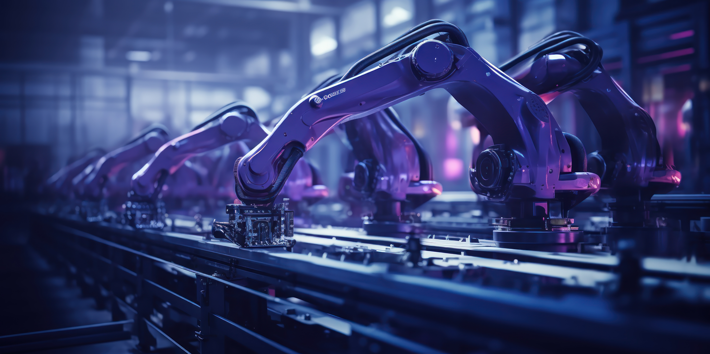

Manufacutring Solutions
At Yotttron, we excel in providing state-of-the-art solutions designed specifically for the manufacturing industry. Leveraging our extensive expertise in technology integration and process optimization, we empower manufacturing companies to enhance efficiency, reduce operational costs, and maintain a leading edge in their respective markets Whether you're looking to streamline production processes, implement cutting-edge IoT solutions, or upgrade automation systems, Yotttron Solutions is your trusted partner for achieving sustainable success.
Learn More